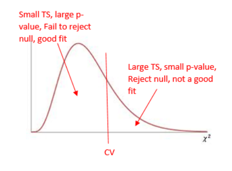

4.8 Goodness of Fit
Test the hypothesis that an observed frequency distribution fits or conforms to a claimed distribution.
Notations:
O - Observed Frequency of a category is the frequency for the category observed in the sample data.
E - Expected Frequency of a category is the claimed frequency for the category – a calculated value.
K - Number of Different Categories or outcome
n - Total Number of Trials (the sample size)
Requirements:
- The data have been randomly selected.
- The sample data consist of frequency counts for each of the different categories.
- For each category, the expected frequency is at least 5. (The expected frequency for a category is the frequency that would occur if the data actually have the distribution that is being claimed. No requirement that the observed frequency for each category must be at least 5.)
Test Statistic for a Goodness of Fit Test
We will get this value from StatCrunch, but it can be calculated by hand:
\(\chi^{2}=\sum \frac{(O-E)^{2}}{E}\)
Calculating Expected Frequencies (E)
- Expected frequencies are equal: \(E=n/k\)
- Expected frequencies are not equal: \(E=np\) (for each category)
Null and Alternative Hypotheses
- Null, \(H_0\)
The distribution of ___________ is the same as the expected distribution.
For each category, the observed value is equal to the expected value.
Mathematically:
\(p_1=p_2=p_3...\) for an expected uniform distribution
\(p_1=\_\_\_,\;p_2=\_\_\_,\;p_3=\_\_\_...\) for any non-uniform expected distribution.
- Alternative, \(H_A\)
The distribution of _____________ differs from the expected distribution.
In the categories, at least one observed value is NOT equal to the expected value.
Using StatCrunch for a Goodness of Fit Test:
- Identify the critical chi-squared value, \(\lambda_{c v}^{2}\) in order to shade your curve.
STAT - Calculators - Chi-Square
- Enter degrees of freedom, DF = k – 1
- Area to the right (always a right-tail test, use ≥) is the significance level
- Run the test and record the important information:
STAT – Goodness of Fit – Chi Square Test – fill in information about your observed and expected values –
Identify
- Test Statistic (Chi-Square)
- P-value
- Mark your curve with your test statistic. Is it in the shaded rejection region in the right tail?
- Make your decision about the null. Was p-value < alpha?
The Chi-Square Curve for a Goodness of Fit Test
Goodness-of-Fit is always a right-tailed test. Large values of \(\chi^{2}\) result from significant differences between observed and expected frequencies. When the test statistic falls in the critical region in the right tail, we know that our observed frequencies are too different from the claimed distribution for it to be a good fit.


- College Dining: The college dining service claims there is no difference in student preferences among the following
four entrees: pizza, cheeseburgers, chicken strips, and salad. A sample of 200 students showed that 61 preferred
pizza, 49 preferred cheeseburgers, 54 preferred chicken, and 36 preferred salad. Use a 0.10 significance level to test
the dining services claim that there is no difference in student preferences.
Entree Pizza Cheeseburger Chicken Strips Salad Number Observed 61 49 54 36 Number Expected 50 50 50 50
The original claim:
There is no difference in student preferences among the four entrees—the preferences follow a uniform distribution. \(H_0\):
p1 = p2 = p3 = p4 The distribution of the four entrees is the same as the expected uniform distribution. \(\alpha =\)
\(0.10\) \(\chi_{C V}^{2}=\)
\(6.251\) \(\chi_{T S}^{2}=\)
\(6.680\) p-value:
\(0.0828\) Rejection Criteria: Reject \(H_0\) if
p-value < 0.10
| LEMON IMPORTS (metric tons) | 230 | 266 | 359 | 480 | 534 |
|---|---|---|---|---|---|
| US CRASH FATALITY RATE (per 100,000 population) | 15.9 | 15.7 | 15.5 | 15.3 | 14.8 |
- \(H_0\) :
\(\rho = 0\) There is no linear correlation in the population - \(H_A\) :
\(\rho \neq 0\) There is some linear correlation in the population - Correlation Coefficient:
\(r = -0.9554\) - Pearson Correlation Critical Values:
\(r_{cv}= ±0.878 \) (From the Table of Critical Values for Correlation Coefficients) - p-value for slope:
= 0.01125 - Decision:
\(0.01125 < 0.05 \) Reject \(H_0\) - Concluding Statement:
There is sufficient evidence to support the claim of linear correlation between weights of lemon imports from Mexico and US car fatality rates. - Regression Equation:
\(\hat{y}=16.6-0.003 x\) - Good predictor?
Yes, rejected \(H_0\). - Do the results suggest that imported lemons cause car fatalities?
No. Correlation does NOT imply causation!